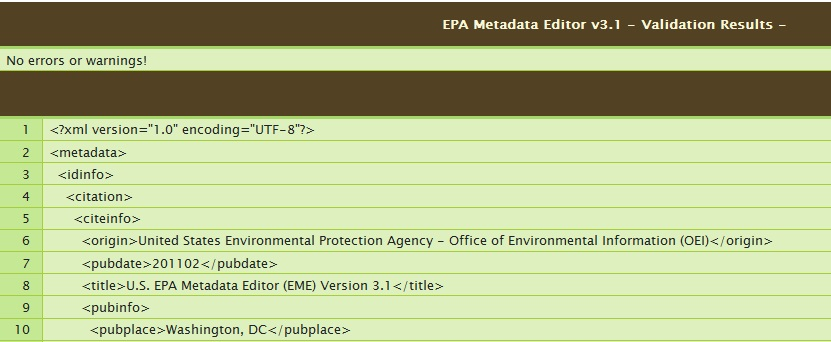
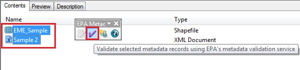

EPA Metadata Editor (EME)
Using the EPA Metadata Editor Validator
The EME allows a user to validate records according to EPA's Geospatial
Metadata Technical Specification Version 1.0. This validation function
tests metadata records for compliancy with both FGDC requirements and
EPA requirements. All EPA-compliant records are also FGDC-compliant. This
service can be invoked for a single metadata record from the EPA Metadata
Editor user interface or it can be invoked in batch-processing mode for a set
of files from ArcCatalog. Information on performing validation using both of
these methods is provided below. Please Note, if you have problems viewing the
validation results in your web browser, please read the information provided
at the end of this page.
Validation Configuration Options and Settings
Tab 3 of the EME user interface allows you to specify whether
or not to use the EPA's web service for performing metadata validation along
with how to view validation results. For more information on configuring the
validation settings, please see the 'Validation via Webservice and Viewing
Validation Results' section of the Interface
Features page.
Using the Validation Service for a Single Metadata Record
After editing your metadata record, you can test the compliancy of
your information by going to Tools --> Validate Metadata.

Depending on the settings you've
configured for viewing the results, you will be presented with the results of
validation within a web browser or the EME user interface (shown below). You
may choose to view results using either or both of these options. For more
information on configuring the validation settings, please see the Interface
Features page.
The 'View in browser window' option will open a web
page and will list the errors and/or warnings found during validation (if any)
along with information about the specific line(s) where errors and/or warnings
were reported. It also displays the total number of errors and warnings found
in the record. You may scroll through the record to view the element(s) that
caused the error. Errors will be highlighted in red and warnings will be
highlighted in yellow. In cases where the error is described using the term
"EPA requires", this error is specific to EPA's Geospatial
Metadata Technical Specification Version 1.0. In cases where the error is
a standard FGDC error, the "EPA requires" term will not be shown. In cases
where a required element is missing, the parent element will be highlighted to
so that users can understand which section was missing the required
information.
The 'View in EME' option will highlight errors in the
user interface using a red balloon. Red balloons are displayed at each
location within the EME user interface where errors were found in the metadata
record. Users can hover over the balloon to understand what the nature of the
error was and then fix the error(s) accordingly (see below).


Using the Validation Service for a Batch of Metadata Records
If you'd like to validate multiple records simultaneously, you can
use the batch validation feature of the EME. This is done in ArcCatalog
outside of the EME interface. To batch validate a set of records, take the
following steps:
- Navigate to a directory or folder of interest in ArcCatalog
- Click on the 'Contents' tab.
- Select one or more metadata records in the Contents interface
- Click on the 'Validate selected records...' button in the Metadata Toolbar in ArcCatalog. Each metadata record selected will be displayed in a separate web page in your browser. The title of the selected record will be displayed in the title of the web page.

Troubleshooting Viewing the Validation Results in your Web Browser
If
the EPA Validator results don't appear to be formatted correctly within your
web browser, take the following steps:
- Open Windows Explorer
- In the "Tools" menu, go to "Folder Options"
- Click on the "File Types" tab
- Pick "XML Document" in the list then click "Edit..."
- The "Content Type (MIME)" should be text/xml and "Default Extension for
Content Type" should be ".xml"
- Note: if XML is not in your list, click "New", then enter "xml" for
the extension and "XML document" from the drop down list for the file type.